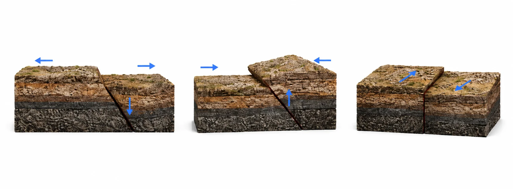
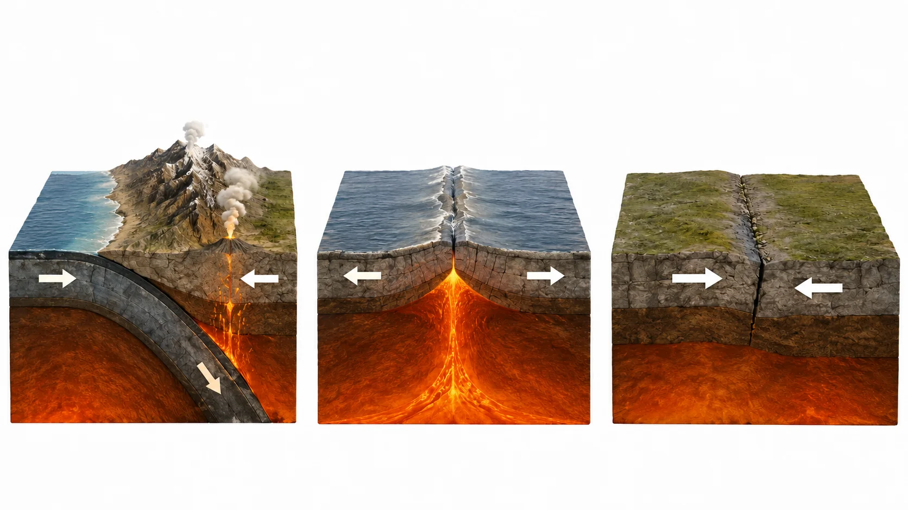
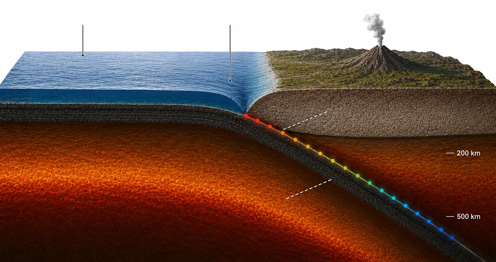
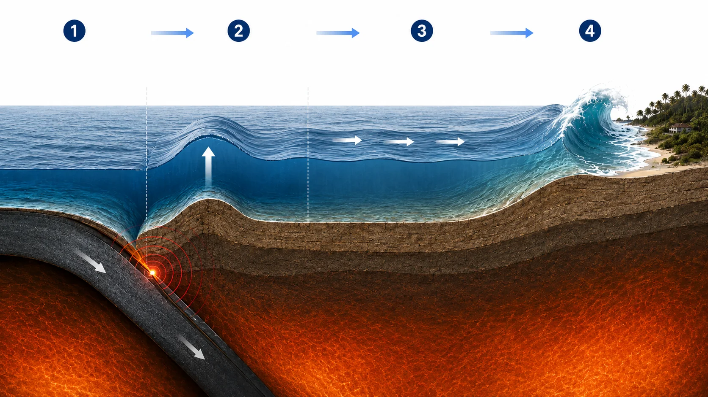

Earthquake Guide
From the physics of a fault to what to keep in a kit — nine topics, in the order they build on each other.
Browse the guide
What an earthquake is, and what it sends out
How a fault stores strain and lets it go, the four waves that carry it away, and what depth does to all of it.
What is an earthquake?
An earthquake is the sudden slip of rock along a fault — a fracture in the Earth's crust where stress has been building for years to centuries. Tectonic plates keep moving; friction keeps the fault locked. Strain accumulates in the rock on either side until it exceeds what the fault can hold, and the two sides lurch past each other in seconds. The stored elastic energy leaves as seismic waves.
That idea — rock deforming elastically, then snapping back — is called elastic rebound, proposed by Harry Fielding Reid after the 1906 San Francisco earthquake, and it is still the basic picture.
- Hypocenter
- Where the rupture starts, kilometres down. It spreads across the fault plane from there at roughly 2–3 km/s.
- Epicenter
- The point on the surface directly above it — the position plotted on the live map.
How big is the slip?
Magnitude is really a statement about the size of the rupture. Three things set it: how much fault area broke, how far it slipped, and how stiff the rock is.
| Magnitude | Typical rupture length | Typical slip |
|---|---|---|
| M 4 | about 1 km | a few cm |
| M 5 | about 3 km | ~10 cm |
| M 6 | about 10 km | ~30 cm |
| M 7 | about 40 km | ~1 m |
| M 8 | about 200 km | ~5 m |
| M 9 | 500–1,500 km | 10–50 m |
Order-of-magnitude figures for a continental or subduction fault. Real ruptures vary widely — the point is that each magnitude step means a rupture several times longer, which is why the very largest earthquakes only happen where faults are long enough to host them.
Three ways a fault can move
Which way the two blocks move depends on how the crust is being squeezed or stretched. The style of faulting predicts a great deal — whether the quake can be huge, whether it can lift the seafloor and make a tsunami, and how deep it is likely to be.

1 2 3| Fault type | Stress | Where you find it | Largest it gets |
|---|---|---|---|
| Normal | Extension | Mid-ocean ridges, rift valleys, Basin and Range | Rarely above M 7.5 |
| Reverse / thrust | Compression | Subduction zones, mountain fronts (Himalaya, Andes) | Up to M 9+ — every M 9 on record |
| Strike-slip | Shear | Transform boundaries: San Andreas, North Anatolian | About M 8.0–8.3 |
Four kinds of seismic wave
A single earthquake sends out several wave types that travel at different speeds and shake the ground in different directions. They arrive in a fixed order, and that order is what makes both early warning and epicenter location possible.
| Wave | Speed in the crust | Ground motion | Travels through | Damage |
|---|---|---|---|---|
| P | 5–8 km/s | Push–pull along the ray | Solid, liquid, gas | Low — often heard as a bang |
| S | 3–4.5 km/s | Shear across the ray | Solid only | High |
| Love | 2–4.4 km/s | Horizontal shearing | Surface layers | High, especially on soft soil |
| Rayleigh | 2–4 km/s | Rolling ellipse | Surface layers | High at long period; hard on tall buildings |
Speeds are typical continental-crust values; they rise with depth. Surface waves lose energy more slowly with distance than body waves, so far from a large earthquake they are what is left — and why an M 8 can set tall buildings swaying a thousand kilometres away.
Reading a seismogram
A single station's record answers "how far away?" before anyone knows where the quake was. The gap between the P and S arrivals grows with distance, at a rate the rock sets.
Shallow, intermediate, deep
Depth changes everything about how an earthquake is felt. The same magnitude at 15 km and at 300 km are not comparable events at the surface.
| Class | Depth | Share of all quakes | Felt as |
|---|---|---|---|
| Shallow | 0–70 km | about 75% | Sharp, violent, locally concentrated |
| Intermediate | 70–300 km | about 23% | Weaker but felt over a wider area |
| Deep | 300–700 km | about 2% | Broad, gentle rolling; rarely damaging |
Nearly all damaging earthquakes are shallow. Below about 70 km the rock is hot enough to deform rather than snap, so deep earthquakes should not be possible at all — and outside subduction zones they are not. They occur only inside slabs of cold oceanic plate sinking into the mantle, which is why a map of deep events traces the world's subduction zones exactly.
The practical floor is around 700 km. Below that the slab has warmed enough that brittle failure stops.
Why earthquakes happen where they do
Almost every earthquake sits on a plate boundary. Which kind of boundary decides how large it can get, how deep it can be, and whether it can raise a tsunami.
Where earthquakes happen
The Earth's outer shell is broken into about a dozen large tectonic plates that move a few centimeters per year — roughly as fast as fingernails grow. Nearly all earthquakes occur on the boundaries where plates meet, which is why events on the live map trace such clear lines rather than scattering evenly.

1 2 3- Convergent (subduction) — plates collide and one dives beneath the other. Produces the planet's biggest quakes and tsunamis (Japan, Chile, Sumatra).
- Divergent (ridges) — plates pull apart at mid-ocean ridges. Frequent but mostly moderate, shallow events (Mid-Atlantic Ridge).
- Transform (strike-slip) — plates slide past each other. Shallow quakes that can be very damaging near cities (San Andreas, North Anatolian).
- Collision — two continents meet and neither will sink. The crust thickens instead, raising the Himalaya and scattering large quakes far inland.
The major plates
Seven plates cover most of the surface; a handful of smaller ones cause a disproportionate share of the damage.
| Plate | Moves | Rate | Its busiest boundary |
|---|---|---|---|
| Pacific | North-west | 7–10 cm/yr | Subducting beneath Japan, Kamchatka and the Aleutians |
| Nazca | East | 6–8 cm/yr | Under South America — the Andes and Chile's great quakes |
| Australian | North / north-east | ~7 cm/yr | Collides with the Sunda arc at Indonesia |
| Philippine Sea | North-west | 6–8 cm/yr | Caught between the Pacific and Eurasia; Nankai Trough |
| Cocos | North-east | ~7 cm/yr | Under Central America and southern Mexico |
| Indian | North | 4–5 cm/yr | Ploughing into Eurasia — the Himalayan front |
| Arabian | North | ~2–3 cm/yr | Pushes Anatolia west along the North Anatolian Fault |
| African | North-east | ~2 cm/yr | Closing the Mediterranean; splitting at the East African Rift |
| North American | West | 1–2 cm/yr | Slides past the Pacific plate at the San Andreas Fault |
| South American | West | 1–2 cm/yr | Overrides the Nazca plate |
| Eurasian | East, slowly | ~1 cm/yr | Absorbs the Indian and Arabian collisions |
| Antarctic | Rotating slowly | ~1 cm/yr | Almost entirely ridges — quiet, mostly moderate quakes |
Rates are typical relative-motion values from space geodesy and vary along each boundary. Fast convergence is the single best predictor of frequent large earthquakes, which is why the Pacific and Nazca margins dominate any list of great events.
Inside a subduction zone
Everything that makes the largest earthquakes lives in one cross-section: a cold plate bending down, a locked interface tens of thousands of square kilometres wide, and a sheet of seismicity descending into the mantle.

1 2 3 4 5Vertical scale is exaggerated: a real subduction interface dips at only about 10–25° near the trench, far shallower than it can be drawn at this width.
The interface is the danger. Where the two plates are stuck together, over a patch that can be hundreds of kilometres long and a hundred wide, strain builds for centuries. When it lets go, the whole patch moves at once — that is a magnitude 9.
The slab keeps its earthquakes. Following the events down the dipping plane gives the Wadati–Benioff zone, discovered independently by Kiyoo Wadati in the 1920s and Hugo Benioff in the 1950s. It was among the first direct evidence that plates really do sink.
Water makes the volcanoes. The descending plate carries seawater bound into its minerals. Around 100 km depth that water is released, lowering the melting point of the mantle above, and the melt rises to build the volcanic arc — Japan's, the Cascades, the Andes.
Tsunami risk is built in. The interface is shallow and dips gently under water, so slip lifts the seafloor over a huge area. That is precisely the geometry that displaces an ocean.
Earthquakes far from any boundary
About 5% of earthquakes happen in plate interiors, where no boundary explains them. They are rarer, harder to anticipate, and often more damaging than their magnitude suggests, because old, cold, unbroken crust carries the waves efficiently and because nobody builds for a quake that has not happened in living memory.
The 1811–12 New Madrid sequence in the central United States was felt over most of the continent. Australia, peninsular India and northern Europe all have intraplate seismicity.
Induced seismicity is the modern addition to this category: fluid injection for wastewater disposal or geothermal energy, and reservoir impoundment behind large dams, can unclamp faults that were already close to failing. Parts of Oklahoma went from a couple of M 3+ events a year to hundreds within a decade before injection rules changed.
Hotspots such as Hawaii and Iceland sit over rising mantle plumes rather than plate edges; their earthquakes are mostly volcanic and shallow.
How an earthquake becomes a number
From a suspended mass to a published magnitude — locating the epicenter, and why five different magnitude scales exist at all.
From ground motion to a record
A seismometer solves one problem: how do you measure the motion of the ground while standing on it? The answer is inertia. A suspended mass tends to stay put while its frame moves with the earth, and the relative motion between the two is what gets recorded.
Modern broadband instruments hold the mass almost still with a feedback force and record how much force that took — which gives a faithful signal from about 0.01 Hz to 50 Hz, five orders of magnitude of period in one box. Next to them sit strong-motion accelerometers, which are deliberately less sensitive so they do not clip when the shaking is violent.
Three components — north, east and vertical — are needed, because ground motion is a vector and the wave types are told apart by which direction they move.
| Instrument | Records | Good for |
|---|---|---|
| Broadband seismometer | Velocity | Distant and small events; waveform modelling |
| Strong-motion accelerometer | Acceleration | Severe local shaking; building codes; ShakeMaps |
| Short-period sensor | Velocity, narrow band | Dense local networks; small quakes |
| GNSS / GPS station | Permanent displacement | Very large quakes, where seismometers saturate |
Finding the epicenter
One station gives a distance but no direction. Three give a point. This is the classic construction, and although agencies now solve it numerically for hundreds of arrivals at once, the logic is unchanged.
Each station converts its S–P interval into a distance and draws a circle of that radius. Two circles cross at two points; the third picks one. Depth then comes from how the arrival times vary with distance, and the whole solution is refined until predicted and observed times agree.
Which magnitude is it?
"Magnitude" is not one measurement. Several scales exist because different instruments, distances and event sizes need different methods — and older scales stop responding once an earthquake gets big enough, a problem called saturation.
| Scale | Symbol | Measured from | Useful range | Saturates at |
|---|---|---|---|---|
| Local (Richter) | ML | Peak amplitude on a short-period record, within ~600 km | 2–6 | ~6.5 |
| Body wave | mb | Amplitude of the first 1-second P waves | 4–6.5 | ~6.5 |
| Surface wave | Ms | Amplitude of 20-second surface waves | 5–8 | ~8.3 |
| Duration / coda | Md | How long the signal lasts | 1–4 | — |
| Moment | Mw | Seismic moment: rigidity × rupture area × slip | 3.5 and up | Does not saturate |
Why saturation matters. Charles Richter's 1935 scale reads the tallest wiggle at a given period. Once a rupture lasts longer than that period, making it longer still does not make the wiggle taller — so an M 8 and an M 9 can look nearly identical on ML. The 1960 Chile earthquake was Ms 8.5 by the scales of the day; recomputed as moment magnitude it is Mw 9.5, more than thirty times the energy.
Why Mw is the standard. Moment magnitude is derived from the physical size of the rupture rather than from a single amplitude, so it keeps working at any size and can be compared across decades and agencies. Small events still get ML or Md, because there is not enough long-period signal to compute a moment — which is why a catalogue mixes magnitude types, and why this site records which type each event carries.
Where this site's numbers come from
World Earthquake Labs does not operate seismometers. It reads the catalogues that the monitoring agencies publish, merges them, and keeps the result current.
Size at the source, shaking at your feet
Two measurements that are constantly confused. One describes the earthquake; the other describes your street.
Magnitude vs Intensity an earthquake's "size" and its "impact" are different things
- The energy released at the source
- Same value worldwide, measured by seismometers
- +1 magnitude ≈ 32× more energy
- How strongly people and buildings feel it
- Different at every location
- Fades with distance and depth
We report moment magnitude (Mw) wherever the agencies provide it. It is logarithmic: each whole step means about 10× larger ground motion and ~32× more energy — so an M 7 releases roughly 1,000× the energy of an M 5.
The magnitude scale
Typical effects and how often each class occurs worldwide.
| Class | M | Typical effects | Per year |
|---|---|---|---|
| Minor | 2–3.9 | Often felt, rarely causes damage | > 100,000 |
| Light | 4–4.9 | Noticeable shaking, minor damage | ~ 13,000 |
| Moderate | 5–5.9 | Damage to weak structures | ~ 1,300 |
| Strong | 6–6.9 | Destructive near the epicenter | ~ 130 |
| Major | 7–7.9 | Serious damage over wide areas | ~ 15 |
| Great | 8+ | Catastrophic; can trigger tsunamis | ~ 1 |
Long-run averages. Any single year can differ sharply — great earthquakes in particular arrive in clusters, and 2004–2011 produced far more than the long-term rate would suggest.
What 32× actually means
Energy rises as 101.5 per magnitude step. Stated as a number of kilotons of TNT the scale becomes easier to feel — and the gap between a damaging quake and a catastrophic one becomes obvious.
| Magnitude | Energy released | TNT equivalent | Comparable to |
|---|---|---|---|
| M 4 | 6.3 × 1010 J | 15 tonnes | A large quarry blast |
| M 5 | 2.0 × 1012 J | 480 tonnes | A very large conventional explosion |
| M 6 | 6.3 × 1013 J | 15 kilotonnes | The Hiroshima bomb |
| M 7 | 2.0 × 1015 J | 480 kilotonnes | A large thermonuclear warhead |
| M 8 | 6.3 × 1016 J | 15 megatonnes | The largest weapons ever tested by the USA |
| M 9 | 2.0 × 1018 J | 480 megatonnes | All of the world's electricity for about a day |
| M 9.5 | 1.1 × 1019 J | 2,700 megatonnes | The 1960 Chile earthquake, the largest ever recorded |
From log10E ≈ 1.5M + 4.8, with E in joules. Only a small fraction of this energy leaves as seismic waves — most goes into friction and heat on the fault, and into fracturing rock. The comparisons are for scale, not for damage: a bomb releases its energy at a point in microseconds, an earthquake over hundreds of kilometres and several minutes.
The intensity scale, I to XII
Intensity is what an earthquake did somewhere, graded from what people felt and what broke. It predates instruments, still fills the gaps where instruments are sparse, and is what actually matters for planning. This is the Modified Mercalli scale; Japan uses its own JMA shindo scale of 0–7, and Europe the EMS-98, all broadly comparable.
| MMI | Shaking | What people and buildings experience | Peak ground acceleration |
|---|---|---|---|
| I | Not felt | Detected only by instruments | < 0.1 %g |
| II–III | Weak | Felt by a few at rest, mostly upstairs; like a passing truck. Often not recognised as an earthquake | 0.1–1.4 %g |
| IV | Light | Felt indoors by many; dishes and windows rattle; parked cars rock | 1.4–3.9 %g |
| V | Moderate | Felt by nearly everyone; unstable objects overturn; some windows break; sleepers wake | 3.9–9.2 %g |
| VI | Strong | Felt by all, many frightened; plaster cracks, heavy furniture moves; slight damage | 9.2–18 %g |
| VII | Very strong | Hard to stand; negligible damage in well-built structures, considerable in poorly built ones | 18–34 %g |
| VIII | Severe | Considerable damage to ordinary buildings; chimneys and walls fall; partial collapse | 34–65 %g |
| IX | Violent | Damage even to earthquake-designed structures; buildings shifted off foundations; ground cracks | 65–124 %g |
| X–XII | Extreme | Most masonry destroyed; rails bent; bridges down; at XII, total destruction and visible ground waves | > 124 %g |
Shaking is only the beginning
Ground failure, tsunami and fire do much of the damage, and the ground you are standing on matters more to the outcome than the magnitude does.
What actually causes the damage
Earthquakes rarely hurt people directly. Almost all loss comes from what the shaking sets off — and which of these dominates depends far more on the ground and the buildings than on the magnitude.
| Hazard | What happens | Where it is worst | Onset |
|---|---|---|---|
| Ground shaking | Structures are driven back and forth until they fail | Soft soil, basins, unreinforced masonry | Seconds |
| Liquefaction | Saturated sand loses strength and flows; buildings tilt and sink | Reclaimed land, river deltas, coastal fill | Seconds to minutes |
| Landslide | Slopes fail, burying valleys and cutting roads | Steep terrain, especially after rain | Seconds to days |
| Surface rupture | The fault breaks the ground surface, offsetting anything across it | Directly on the fault trace | Seconds |
| Tsunami | Displaced seafloor sends waves across the ocean | Low-lying coasts near subduction zones | Minutes to hours |
| Fire | Ruptured gas and damaged wiring ignite; broken mains stop firefighting | Dense cities | Minutes to hours |
| Lifeline failure | Water, power, transport and hospitals go down together | Everywhere; drives the long recovery | Hours to months |
Liquefaction
Loose, water-saturated sand is held up by grain-to-grain contact. Shaking rearranges the grains; the water between them cannot escape fast enough, so pore pressure climbs until it carries the whole load. At that moment the ground has no shear strength — it behaves like a dense liquid.
Heavy buildings sink or tilt, buried tanks and pipes float upward, and sand and water erupt at the surface as sand boils. On even a gentle slope the softened layer slides seaward, tearing the ground above into fissures — lateral spreading, which is what destroys harbours and bridge approaches.
Niigata in 1964 gave the phenomenon its modern textbook images: apartment blocks that toppled over intact, without breaking. Christchurch in 2011 showed the cost when it happens under a whole city, and it is a large part of why so much of that city was not rebuilt in place.
Landslides and ground failure
Strong shaking on steep ground triggers landslides in enormous numbers. The 2008 Wenchuan earthquake set off tens of thousands of them; they killed a substantial fraction of the victims, dammed rivers into unstable new lakes, and cut the roads rescuers needed.
The hazard does not end with the shaking. Slopes loosened by an earthquake keep failing for years afterwards, especially in the first rainy season, and the debris raises flood risk far downstream.
Surface rupture is a narrower but absolute hazard: nothing built across an active fault trace survives metres of offset. It is the reason fault-zoning laws exist, and why in California a surveyed active trace legally restricts what can be built on it.
Tsunami
When a shallow thrust earthquake lifts a wide patch of seafloor, it lifts the entire water column above it. That displacement spreads outward as a wave that is almost invisible in deep water and devastating at the coast.

5 6| Water depth | Wave speed | Crossing 1,000 km |
|---|---|---|
| 4,000 m | ~713 km/h | 1 h 24 min |
| 2,000 m | ~504 km/h | 1 h 59 min |
| 200 m | ~159 km/h | 6 h 16 min |
| 50 m | ~80 km/h | 12 h 33 min |
| 10 m | ~36 km/h | 28 h 03 min |
Speed is √(g × depth). In deep water a tsunami can cross an ocean in the time of an airline flight while a ship above it feels nothing — the wave is a metre high but hundreds of kilometres long. As it shoals it slows, and the energy that was spread over that length has nowhere to go but up.
- Strong or long shaking on the coast. If it is hard to stand, or lasts more than about 20 seconds, go inland or uphill as soon as it stops.
- The sea withdraws, exposing reef and seabed. This is the trough arriving first; the crest is minutes behind.
- A loud roar from the sea, like a train.
A local tsunami can arrive in 10–20 minutes — sooner than any official warning can reach you. Move to high ground or as far inland as possible, on foot if roads are damaged, and stay there. Waves continue for hours and the first is often not the largest.
Aftershocks
A large earthquake redistributes stress onto the surrounding crust, and that adjustment plays out as a long tail of smaller events. Their rate follows Omori's law: aftershocks decay roughly as 1/t, so the day-two rate is about half the day-one rate, day ten about a tenth, and the sequence never quite ends — it fades below the background.
Båth's law adds a rule of thumb for the largest one: expect it to be about 1.2 magnitude units below the mainshock. An M 7.0 will typically be followed by something near M 5.8.
Two consequences matter in practice. First, aftershocks hit buildings that the mainshock has already weakened, so a smaller event can cause the collapse. Second, the labels are assigned in hindsight: what is called a foreshock only earns the name once something bigger follows, which is why "foreshock activity" is never a usable warning at the time.
Occasionally the second event is the larger one, and the sequence is renamed accordingly. The 2023 Türkiye–Syria sequence produced an M 7.8 and, nine hours later, an M 7.5 on a different fault — large enough to count as its own earthquake.
The largest, the deadliest, and what they changed
The two lists barely overlap. Nearly every advance in earthquake safety was bought by one of these.
The largest earthquakes ever recorded
Instrumental era only — moment magnitude, from the USGS list of great earthquakes. Every one of them is a subduction thrust.
| Mw | Date | Location | Notes |
|---|---|---|---|
| 9.5 | 22 May 1960 | Valdivia, Chile | The largest ever measured; tsunami killed people in Japan and Hawaii a day later |
| 9.2 | 27 Mar 1964 | Prince William Sound, Alaska | Four and a half minutes of shaking; the study of it confirmed subduction |
| 9.1 | 26 Dec 2004 | Sumatra–Andaman | ~1,300 km of rupture; the deadliest tsunami in recorded history |
| 9.1 | 11 Mar 2011 | Tōhoku, Japan | Up to 50 m of slip; overtopped seawalls and caused the Fukushima accident |
| 9.0 | 4 Nov 1952 | Kamchatka, Russia | Prompted the first Pacific-wide tsunami warning arrangements |
| 8.8 | 27 Feb 2010 | Maule, Chile | Modern building codes held; deaths in the hundreds, not the tens of thousands |
| 8.8 | 31 Jan 1906 | Ecuador–Colombia | Tsunami crossed the Pacific and was recorded in Japan |
| 8.7 | 4 Feb 1965 | Rat Islands, Alaska | Remote; little damage despite its size |
| 8.6 | 28 Mar 2005 | Northern Sumatra | Triggered on the segment adjacent to the 2004 rupture |
| 8.6 | 15 Aug 1950 | Assam–Tibet | The largest continental-collision earthquake on record |
Magnitudes before about 1960 are reassessments from limited instrumental data and carry real uncertainty — often ±0.2 or more.
The deadliest
Note how weakly this list correlates with the one above. Deaths follow building stock, population density, time of day and terrain — not magnitude.
| Deaths (estimated) | Date | Location | M | What drove the toll |
|---|---|---|---|---|
| ~830,000 | 23 Jan 1556 | Shaanxi, China | ~8 | Millions lived in cave dwellings cut into soft loess, which collapsed |
| 242,000–655,000 | 28 Jul 1976 | Tangshan, China | 7.6 | Struck at 03:42 in an unreinforced industrial city; official and independent counts differ sharply |
| ~227,900 | 26 Dec 2004 | Sumatra–Andaman | 9.1 | Tsunami across fourteen countries with no Indian Ocean warning system in place |
| ~200,000 | 16 Dec 1920 | Haiyuan, China | 7.8 | Landslides in loess hill country buried entire villages |
| ~100,000–316,000 | 12 Jan 2010 | Haiti | 7.0 | A moderate quake directly beneath a capital city with almost no seismic construction |
| ~142,800 | 1 Sep 1923 | Kantō, Japan | 7.9 | Firestorms in Tokyo and Yokohama, ignited at the lunchtime cooking hour |
| ~87,600 | 12 May 2008 | Sichuan, China | 7.9 | School and hospital collapses; tens of thousands of landslides |
| ~86,000 | 8 Oct 2005 | Kashmir, Pakistan | 7.6 | Mountain villages, stone masonry, winter approaching |
| ~59,000 | 6 Feb 2023 | Türkiye and Syria | 7.8 & 7.5 | Two large quakes nine hours apart; widespread non-compliant construction |
Historical tolls are estimates and some are actively disputed; ranges are given where sources disagree materially. Figures follow USGS and national agency summaries.
What each disaster changed
Nearly every advance in earthquake safety was bought by a catastrophe. The pattern is consistent enough to be worth stating plainly: the science improves, the codes follow, and the next earthquake in that place kills far fewer people.
The vocabulary, in four groups
Thirty-six terms you will meet on this platform and in news coverage, grouped by what they describe.
The event
Waves and measurement
Tectonic setting
Effects and response
Twelve straight answers
Prediction, aftershocks, early warning — and the myths that keep coming back.
Why do earthquakes happen?
Tectonic plates constantly push against each other, storing stress in the rock along faults. When the stress exceeds the rock's strength, the fault slips suddenly — releasing the stored energy as seismic waves. That slip is the earthquake.
Can earthquakes be predicted?
No. No method reliably gives the time, place and size of a future earthquake, and decades of searching for reliable precursors — radon, animal behaviour, foreshock patterns, electrical signals — have not produced one that works outside hindsight. What science can do is three real things: long-term hazard maps that say how strongly a place should expect to shake over 50 years; short-term aftershock forecasts in probabilities; and early warning, which detects an earthquake already underway and buys seconds.
How do earthquake alerts work?
Stations near the epicenter detect the first P waves, estimate location and magnitude within seconds, and broadcast a warning that races ahead of the slower, damaging S waves. The radio signal travels at light speed; the shaking travels at 3–4 km/s. That gap gives seconds to tens of seconds — enough to stop a train, open a firehouse door, or get under a table. Directly above the epicenter there is a blind zone where the warning cannot arrive first, which is the fundamental limit of the method.
How long do aftershocks last?
Days to months, and occasionally years after a very large mainshock. The rate decays roughly as 1 over elapsed time, so it drops fast at first and then slowly. Expect the largest aftershock to be around 1.2 magnitude units below the mainshock, and remember that it strikes buildings already weakened — stay out of damaged structures.
Do many small quakes prevent a big one?
No. Magnitude is logarithmic: it takes about 32,000 M 3 events to release the energy of a single M 6, and roughly a million to match an M 7. The small quakes a region actually produces barely dent the stress that drives large ones.
Is there such a thing as "earthquake weather"?
No. Earthquakes begin kilometres below the surface, where weather has no influence, and statistical checks find no link to temperature, pressure or season. Very heavy rain can trigger landslides and, over long periods, reservoir loading can influence nearby faults — but there is no weather that precedes earthquakes.
Can the Moon or planets trigger earthquakes?
Tides do flex the crust slightly, and careful studies find a very small increase in the rate of some quake types at particular tidal phases. The effect is far too weak and too general to predict anything: it shifts the odds by a fraction of a percent on faults that were already about to fail. Planetary alignments have no measurable effect at all.
Why did I feel a small quake far away but not a big one nearby?
Depth, geology and what you were doing. A shallow M 3 a few kilometres away can rattle windows while a deep M 6 two hundred kilometres down arrives as a gentle roll. Soft sediment amplifies shaking and hard bedrock dampens it, so two neighbourhoods can differ sharply. Sitting still on an upper floor also makes you far more likely to notice.
Does earthquake-resistant design really work?
Yes, and it is the single most effective way to save lives. Modern codes let a building flex and dissipate energy rather than snap. Compare Chile in 2010 — M 8.8, about 500 times the energy — with Haiti six weeks earlier at M 7.0: deaths in the hundreds versus the hundreds of thousands. The difference was construction.
Should I run outside when the shaking starts?
No. Most injuries happen from falling objects and from people moving during the shaking, and building façades and glass fall onto the street. Drop, cover and hold on where you are, and leave only once the shaking has stopped. The old advice about doorways applies to old adobe houses, not to modern buildings, where a doorway is no stronger than the rest of the frame.
How is depth measured, and why is it often exactly 10 km?
Depth comes from how arrival times vary across a network, and it is the hardest parameter to resolve — especially offshore, where all the stations lie to one side. When the data cannot constrain it, agencies fix depth at a default, commonly 10 km, and publish that. A round 10 km usually means "shallow, not otherwise determined" rather than a measurement.
Why do the numbers change after an earthquake is reported?
The first solution comes from a handful of nearby stations within a minute or two. As distant stations report and analysts review, location, depth and magnitude are all refined, and the magnitude type often changes — an early mb is replaced by a computed Mw. Revisions of 0.2–0.3 magnitude units in the first hour are routine. This site re-fetches the last 14 days every 10 minutes for exactly that reason, so corrections and withdrawals follow through.
Small habits now build big safety later.
Earthquakes are hard to predict — but easy to prepare for. Know what to do in each situation and keep your emergency kit ready.
Get under a sturdy table, protect your head, and hold on until the shaking stops. Stay away from windows. Do not run outside.
Move away from façades, glass, and power lines to open space — falling debris causes most street injuries.
Stop clear of bridges, overpasses, and tunnels. Stay in the car until the shaking ends, then drive carefully.
Press every floor button, exit at the first floor that opens, and use the stairs — never an elevator — to evacuate.
Long or strong shaking near the sea means move inland or uphill at once — a local tsunami can arrive before any official alert. Never go to watch.
Turn face-down and protect your head and neck with a pillow. Walking across a dark room over broken glass is the greater risk.
Emergency Kit Checklist
Prepare it together with your family — check what you already have.
Is your home ready?
Three things to check this week.
After the shaking stops
The first hour decides a great deal. Work through this in order — and expect aftershocks throughout.
| When | Do | Do not |
|---|---|---|
| First minutes | Check yourself, then others, for injuries. Put on sturdy shoes before walking anywhere — broken glass is everywhere. | Do not use a lighter or match until you are sure there is no gas leak. |
| First hour | If you smell gas or hear hissing, shut off the supply and open windows. Shut off water if pipes are damaged. Extinguish small fires. | Do not turn utilities back on yourself once shut off — gas in particular needs a professional. |
| First hour | Text rather than call. Networks stay usable for data long after voice calls jam. | Do not drive unless it is an emergency; keep roads clear. |
| First day | Listen to official information on radio or an agency app. Check on neighbours, especially older ones. | Do not enter damaged buildings, and do not go to the coast to look at the sea. |
| First week | Photograph damage before clearing it, for insurance. Expect aftershocks and treat weakened structures as unsafe. | Do not assume the largest shock has passed — sequences sometimes escalate. |